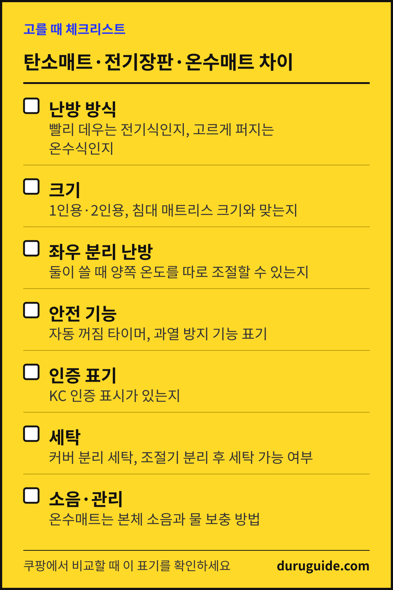

탄소매트·전기장판·온수매트 차이, 우리 집에 맞는 것 고르는 법
이런 상황이죠
바닥이 차가워지기 시작하면 매트를 하나 들일까 고민하게 돼요. 그런데 찾아보면 탄소매트, 전기장판, 온수매트가 섞여 나오고 설명도 비슷해서 무엇이 다른지 헷갈려요. 침대 위에 깔지, 바닥에 깔지, 혼자 쓸지 둘이 쓸지에 따라 맞는 것이 달라요.
왜 생기나
세 가지는 열을 만드는 방식이 달라요.
- 전기장판 — 매트 안에 깔린 열선에 전기가 흘러 바로 데워져요. 구조가 단순하고 금방 따뜻해지는 편이에요.
- 탄소매트(카본매트) — 열선 대신 탄소 소재 발열체를 써요. 원리는 전기로 데우는 것이라 큰 틀에서는 전기매트의 한 종류예요.
- 온수매트 — 본체(보일러)에서 물을 데워 매트 속 호스로 돌려요. 물이 식으면서 열을 내기 때문에 온기가 고르게 퍼지는 편이지만, 물을 보충하고 관리해야 해요.
제품 소개에 나오는 건강 관련 표현은 제품마다 근거가 다르니, 고를 때는 난방 방식과 안전 기능을 기준으로 보시는 게 좋아요.
사기 전에 먼저 해볼 것
- 바닥 냉기부터 막아요. 맨바닥에 바로 깔면 열이 바닥으로 빠져요. 두꺼운 러그나 단열 매트를 아래에 깔면 같은 온도에서도 더 따뜻하게 느껴져요.
- 쓰던 매트를 점검해요. 집에 있는 매트가 고르게 따뜻하고 코드에 손상이 없다면 굳이 바꾸지 않아도 돼요.
- 어디에 깔지 정해요. 침대 위에서 쓸 수 있는 제품인지, 접히는 구조인지에 따라 고를 수 있는 폭이 달라져요.
- 잘 때 온도를 낮춰요. 높은 온도로 오래 누워 있으면 저온화상이 생길 수 있어요. 잠들기 전에는 낮은 단계나 타이머를 쓰세요.
고를 때 체크리스트
| 확인 항목 | 보는 기준 |
|---|---|
| 난방 방식 | 빨리 데우는 전기식인지, 고르게 퍼지는 온수식인지 |
| 크기 | 1인용·2인용, 침대 매트리스 크기와 맞는지 |
| 좌우 분리 난방 | 둘이 쓸 때 양쪽 온도를 따로 조절할 수 있는지 |
| 안전 기능 | 자동 꺼짐 타이머, 과열 방지 기능 표기 |
| 인증 표기 | KC 인증 표시가 있는지 |
| 세탁 | 커버 분리 세탁, 조절기 분리 후 세탁 가능 여부 |
| 소음·관리 | 온수매트는 본체 소음과 물 보충 방법 |
이런 분께는 맞지 않아요
- 물 보충과 시즌 끝 물 빼기가 번거롭다면 온수매트는 부담이 될 수 있어요.
- 방 전체 공기를 데우고 싶다면 매트보다는 다른 난방기가 맞아요.
안전하게 쓰려면
매트를 접은 채로 켜거나 위에 무거운 물건을 올려 두지 마세요. 열선이나 호스가 꺾이면 과열이나 고장의 원인이 될 수 있어요. 반려동물이 코드를 물어뜯지 않게 정리하고, 감각이 둔한 분이나 어린아이가 쓸 때는 온도를 낮게 두세요.
추천 제품 찾기
먼저 깔 자리(침대·바닥)와 쓰는 사람 수를 정하고, 관리 부담을 감수할 수 있는지 생각해 보세요. 쿠팡에서는 난방 방식, 크기, 좌우 분리 난방, 자동 꺼짐 기능, KC 인증 표기를 비교해 보시면 돼요. 현재 가격은 쿠팡에서 확인해 주세요.

이 포스팅은 쿠팡 파트너스 활동의 일환으로, 이에 따른 일정액의 수수료를 제공받습니다.
이 콘텐츠는 토스쇼핑 쉐어링크 활동의 일환으로, 링크를 통한 구매가 발생하면 일정 수수료를 지급받습니다.